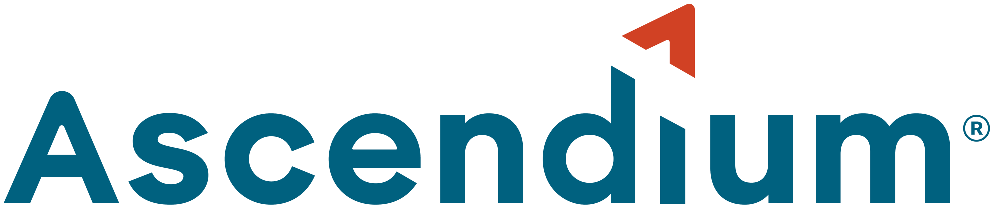

Short, transparent context about why the hub exists and how it supports institutions.
Higher ed leaders needed a shared, finance-informed approach to student success that could scale across campus teams. The hub organizes trusted resources into practical pathways that connect budgeting, operations, and outcomes.
Launched in 2023 and updated in 2025, the hub reflects NACUBO's commitment to transparency, evidence, and institutional collaboration.
Higher ed leaders needed clear, actionable resources that align finance decisions with student outcomes.
The Hub was born out of a multi-year grant-funded initiative launced in 2021 to explore how chief business officers (CBOs) can champion equitable student success through financial leadership. NACUBO Formed a Networked Improvement Community (NIC) of 26 institutions to test and refine a model of practice for student-centered strategic finance.
These institutions-diverse in size, mission, and student population-collaborated to identify barriers, test innovation, and share inshigts. Their contribution directly informed the development of the Hub's tools and recourses.
Built in collaboration with 26 institutions and national partners committed to improving student success through finance and operations.
The hub is stewarded by NACUBO with guidance from member institutions and advisory partners. Updates are scheduled on a regular cadence to keep resources current and aligned with emerging needs.
Each update connects back to NACUBO's broader work in research, advocacy, and member services, ensuring the hub stays credible and actionable.
It is the ability to align budgets, staffing, and operational decisions with measurable student outcomes and equity goals.
This approach connects financial planning and operational capacity to student outcomes, not just program delivery.
Toolkits are reviewed on a regular cadence and updated as new research, practices, and templates become available.
Yes. Use the share links inside each toolkit and follow any usage guidance for licensed materials.
Most institutions track retention, completion, and equity outcomes alongside cost to deliver or reallocate resources.
Some resources are open. A free account is required for member-only toolkits and downloads.
